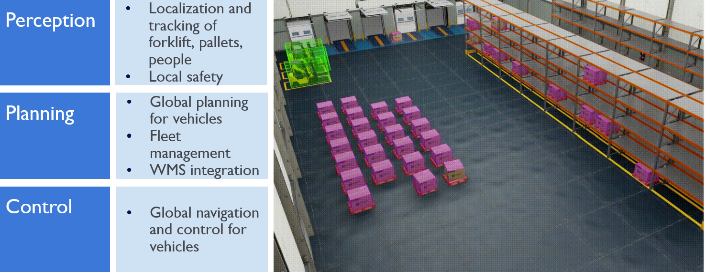

About This Project
Motivation: AMRs cannot adapt well to existing warehouses, resulting in sub-optimal performance in mixed-use environments where automated and manual operations must coexist. A dedicated supervisor is required to troubleshoot disengagement. This project will retrofit existing drive-by-wire electric forklifts to enable gradual adoption from manual to up to 60% autonomous operation. We are going to approach this problem in three steps.
Our answer is to build on existing platforms using an infrastructure-based computer vision system. This system guides fleets of forklifts for end-to-end cross-dock operations using a bird's-eye view. The cameras are mounted on ceilings.
Below is an overview of our solution:
The diagram below shows a working pipeline:
NVIDIA Isaac Sim provides an environment to develop and test a vision-based localization system before deploying it in the real world. The workflow involves detecting forklifts within video streams, localizing the forklifts based on detection information, and replicating the setup in a real environment (after camera calibration and testing). The project is divided into several sections, each focusing on a specific aspect of the system.
This will be expanded in the future sections. We first start with the basics: how to set up the camera.
Camera Setup
We have four cameras with the following specifications (for full details, please refer to the product page): Basler A2A1920-51gcPRO.
Specifications:
Resolution (H × V): 1920 px × 1200 px
Resolution (MP): 2.3 MP
Pixel Size (H × V): 3.45 μm × 3.45 μm
Each camera connects to a port on the TP-Link 5-Port Gigabit Easy Smart Switch with 4-Port PoE+ using a 4-meter Ethernet cable. The switch includes a USB port to connect the network to the computer (in our case, an ASUS desktop) and is powered by a dedicated power supply. Refer to the images below to locate and connect all components. Once identified, position each camera on a tripod or ceiling mount as needed.
Make the connections as shown in the picture. The blue cable connects the camera to the switch, and the white cable connects the switch to the computer. The power cable for the Ethernet switch is labeled “Retrolifts POE”. Connect the power cable and switch the device on.
Mount each camera securely on a tripod or ceiling mount as shown below.
Once all cameras are mounted and connected, open the Pylon Viewer software. A short GIF is included to demonstrate how to power on the system and optimize the bandwidth settings. The computer-to-switch connection supports up to 125 MBps, and each individual port also supports up to 125 MBps. Therefore, when using all four cameras simultaneously, adjust the bandwidth allocation accordingly — for example, 30 Mbps per camera.
Adjust the aperture and focus for each camera as needed. Once setup is complete, run the script (insert script name) and follow the README instructions to perform the calibration.
Below is the ChArUco board used for camera calibration:
1.1 Camera Calibration
- On the ASUS desktop or in the GitHub repository, navigate to the README file: {insert link here}.
- Run the script to capture videos. While capturing data, move the ChArUco board. Pass this video to the Python script to extract frames. Set the frame interval accordingly.
- Locate the folder where these images are saved and provide this folder path to the calibration script.
- Ensure that each camera is properly calibrated. Follow the README documentation carefully.
- For the theoretical background, refer to the OpenCV ArUco documentation: OpenCV documentation.
- To learn how to use a ChArUco board with OpenCV, see this guide: Using ChArUco Boards in OpenCV.
1.2 AprilTag Detection
- Follow the README file to run the AprilTag detection script.
Important Notes
- If the camera is being accessed by Pylon Viewer, it cannot be accessed by scripts at the same time. Close one of them to run the camera.
- If the first script runs successfully, that means the camera is in focus.
- If you want to use a different ChArUco board in the future, define it in the script. It is hardcoded right now.
Distance/Depth Estimation
The next step is to estimate the distance of the object from the camera. This is done using NVIDIA's CenterPose model. You can find the model repository here. The related paper, “Keypoint-Based Category-Level Object Pose Tracking from an RGB Sequence with Uncertainty Estimation,” introduces CenterPoseTrack — a novel framework for category-level 6-DoF object pose tracking using only a monocular RGB video stream, without requiring 3D CAD models of specific object instances.
Unlike traditional instance-level pose tracking, which assumes a known 3D model for each object, this method generalizes to entire categories (e.g., cereal boxes, mugs) with varying shapes and sizes. The system jointly detects and tracks an object’s 3D position, orientation, and relative dimensions over time.
Key Contributions
- Uses a keypoint-based representation: a deep network predicts 2D image coordinates of the 3D cuboid’s corners (keypoints) along with their uncertainties.
- Introduces a tracklet-conditioned network that uses the previous frame’s prediction and uncertainty heatmaps as input, improving temporal consistency.
- Applies a probabilistic filtering process combining Bayesian filtering and Kalman filtering to fuse information over time, reduce jitter, and handle occlusions.
- Explicitly estimates uncertainty in both keypoint locations and object dimensions, which helps stabilize predictions frame to frame.
- Computes the final pose using a PnP (Perspective-n-Point) algorithm with the filtered keypoints and dimensions.
How to Run the CenterPose Model
- Go to the CenterPose folder in your Documents, or clone the repository if you haven’t already.
- Open the
notex.txtfile. This file serves as the key guide for running the repository. - Run line 2 in the inference section. A screenshot is provided for reference below:
- The model is loaded from the
modelsfolder. - The input will be image frames, located in
input/files. - The results are saved in the
inf_resultsfolder. Note: checkinput_filesinsideinference. (The purpose of theoutputsfolder outsideinferenceis currently unclear.)
A typical detection output looks like this:
Important Notes
- Check the JSON file in
inference/results. If thekps_displacement_meanhas a value, it indicates that the object (e.g., forklift) was recognized and the value is stored in the matrix. The value is the center of the base of the box detected. - The current model was trained on synthetic data generated using NVIDIA’s Replicator. The ground truth of every forklift must be known.
- The tracking component described in the paper was not implemented in this setup.
- As the model is not trained on objects that are far away, it might not be the best solution.
Performance on the Retrolifts Dataset
This report — View Report — contains detailed results of running the CenterPose model on the Retrolifts dataset.
In summary, the Retrolift object was detected well at certain angles but poorly at others. For example:
At 0 degrees: the model detected the object accurately. Blue dots represent ground truth; orange dots represent detections.
At 90 degrees: the detection performance dropped significantly, with sparse or missing detections (orange dots).
Isaac Sim
Isaac Sim has four related components essential for this project:
- Isaac Lab
- Omniverse Launcher
- Isaac Gym
- Isaac Replicator
- Omniverse Launcher: Omniverse is a platform of applications built on USD.
- Isaac Sim: Isaac Sim is a specific application of Omniverse for Robotics.
- Isaac Lab: Isaac Lab is a tool for training. Isaac Lab replaces Isaac Gym (which was also a training environment).
- We build in Isaac Gym and train it on Isaac Lab.
- Above is a summary of this YouTube video: How to enable scripting.
To develop the warehouse environment, we first need to get familiar with Isaac Sim. Here are the steps in the documentation which could help:
- Install the Omniverse Launcher and Isaac Sim.
- Follow the documentation to set up the environment: Isaac Sim Setup.
- Learn how to create a simple scene in Isaac Sim: Creating a Simple Scene.
- Explore the Isaac Lab documentation for training environments: Isaac Lab Documentation.
Path Planning in Isaac Sim


Installation Instructions
- Navigate to the Isaac Sim directory:
Launch theOmniverse Launcher, under LIBRARY, launchIsaac Sim, and click Open in Terminal. This will open a terminal in the Isaac Sim directory:~/.local/share/ov/pkg/isaac_sim-2023.1.1. - Clone this repository:
git clone https://github.com/mlab-upenn/autonomous_forklift_teleop.git - In the terminal at the Isaac Sim directory, type
code .to launch Visual Studio Code. Openautonomous_teleop.pyand update theMAP_PATHto match your system. - Install
opencv-pythonin the Isaac Sim environment (do not usesudo apt):
./python.sh -m pip install opencv-python - Download and unzip the asset file
forklift_teleopfrom Google Drive. Upload the folder to NUCLEUS atomniverse://localhost/Projects/.
Running the Autonomous Forklift Teleop Demo
- Launch
Omniverse Launcherand startIsaac Sim. Open Terminal and typecode .. - Open
autonomous_teleop.pyin VS Code. - Run the demo using the Run and Debug tab or press
F5. - Isaac Sim will load the warehouse scene and top-down map. First launch may take 5–10 minutes to compile shaders.
- Switch camera view from Perspective to bot_left or any pre-set view. First-person cameras are attached to forklifts.
- By default, the program starts in Manual mode:
UseW, A, S, Dto move forklift #2.
UseEandQto adjust the fork height.
UseCto reset pose.
UseZto switch to Autonomous mode (five forklifts begin lift & place sequences). UseXto return to Manual mode.
This is the first screen you should see if everything works:
Steps to Debug
Troubleshooting Omniverse Issues
- Go to NUCLEUS and click the hamburger icon. Click the uninstall button.
- Click "Add Service" again. Follow the video below (ignore the "meeting will end" popup).
Steps to Resolve Code Execution Problems
- Revert to Isaac Sim version 4.2 if compatibility issues occur.
- Do a fresh install of Isaac Sim 4.2 if reverting doesn’t help.
- Ensure you’re running from the root folder of Isaac Sim (e.g., "retrolifts" should be inside the Isaac Sim 4.2 folder).